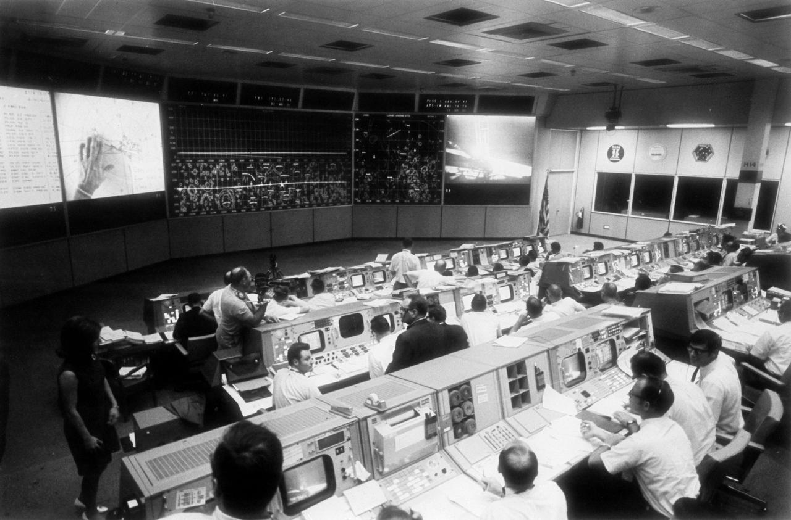
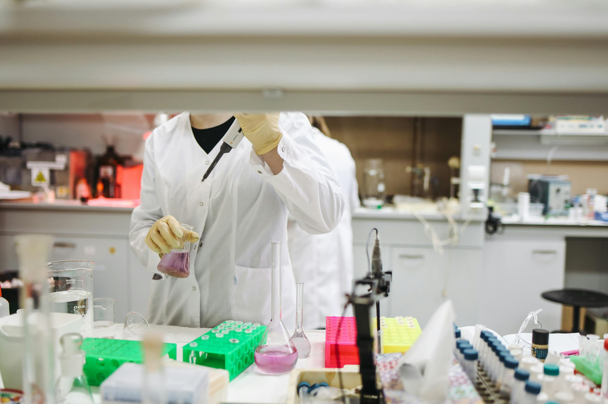

In 1969, Apollo 11 successfully landed on and returned from the Moon, being the first ever to do so. To a world full of people who didn’t know much about the universe and had fantasized about extraterrestrial intelligence for ages, this was as astonishing as it gets. During this time, there was no internet or GPS. The technology wasn’t advanced, and they didn’t have a lot of time, but one thing the scientists had was brains to improve on this goal – oh, and some money. This project cost 25.8 billion dollars, which is 257 billion in 2020 dollars.
It may be hard to grasp the amount, but consider this comparison: If a million dollars is one person, a billion dollars is a thousand people. This is probably more than your house can dream of taking in. With this amount, it is possible to end world hunger for an entire year, buy every NBA team, or build a country with its own military.
This program boosted the development of silicon chips that are found in most of the devices you use, sparked the invention of GPS, and the tech developed for insulation helped the creation of MRI and CT machines that help us cure millions of people every year.
It pushed technological advancements to its limits, and luckily, it worked like a charm. It is undeniable that it helped everyday people. The question of whether the money was well spent is another topic of discussion. The point is that landing on the Moon was a huge step in science, and it was possible only because of the enormous amount of money that was spent on it.

The Problem with the System
The issue is, the investment was not for the sake of science. It was about political interest, as that often drives scientific funding. The Cold War between the US and the Soviets was the biggest reason a scientific project ever had such a never-seen-before budget.
This proposes a real issue that is very commonly seen in the scientific community. It is difficult for some topics to receive funding because they are not a point of interest for profit-driven legal entities. For example, orphan diseases such as sleeping sickness or Chagas disease are critically underfunded because they are so rare that finding a cure doesn’t help the companies make profit from it.
The solution to these problems comes from the variety of resources for finding funds. For research, it is possible to find funding from government grants, internal support from universities or research institutes, non-profit organizations (NPOs), sponsors, or even awards. Most of these come with strings attached – not necessarily foul strings – such as a requirement for open-access publishing or a guarantee of ethical practice.
Some of these conditions are more restricting than others, depending on the source of income. Nonprofits such as Cure Rare Disease, for example, find money for funding through donations. Thus, their conditions may be looser compared to organizations that earn money through the research they invest in. They have more motivation to ensure that the research is going to be profitable. This makes things complicated, as the continuity of the company to fund new research and find cures depends on its decisions to ignore some diseases. It is not necessarily evil to not fund these researches, but a decision required for the survival of the company that aims to do more good.
Deceit
However, conflict of interest doesn’t end there. The problems so far are not caused by the cheating and deception of evil people, but because of how the system is set up. On the other hand, there are some other cases that result in the knowing manipulation of the results of research. This is even more alarming, not only because it can cause other scientists to take these researches as a source and conclude with even more wrong information, but because of all the people it can deceive into consuming the products they defend.
One of the numerous examples of this is the manipulation of research by the tobacco industries. These companies purposefully and repeatedly exploit the findings of scientific research to refute the harm of smoking. Similarly, some companies in the pharmaceutical industry have also been proven to exaggerate findings, such as a certain menstrual hormone therapy medication that was wrongfully “proven” to be effective even though it showed no evidence of benefit later on.
Overall Harm
This is also the big reason why there is public distrust of science. Even though the people who don’t trust in science are the minority, this is a concerning issue since science is the source of information we can trust the most. If these people don’t trust science, what do they trust? Further, as we have seen during the pandemic period, this distrust can affect the majority's lives by tampering with public health.
This is called the funding bias. The term demonstrates how companies that fund these researches can cause the results to be prejudiced. This is one of the concerns – along with benefits – caused by having a profit-derived interest group along with public interest.
There are some solutions to these funding issues, such as independent peer review, disclosure of sponsors, or access to raw data. Some of these are enforced by prestigious journals, but they are still not necessarily perfect. There can be papers that sneak through these precautions, which are difficult to detect.
Science is what helps people improve and get better at everything from ethics to technology. It is unfortunate that it needs funds in a world where the importance of science is not fully understood by everybody. There are solutions to these problems, and there is room for improvement.
The good news is, improvement starts from being aware of these issues and you have already completed that step.
